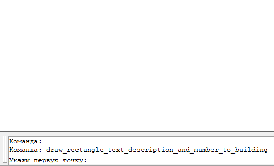
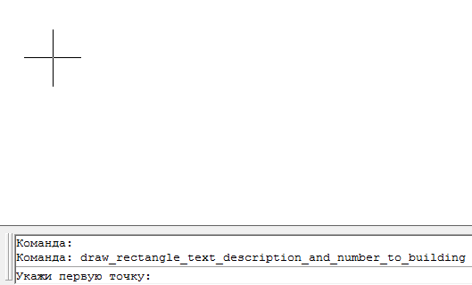

Команда: draw_rectangle_text_description_and_number_to_building
Команда: draw_rectangle_text_description_and_number_to_buildingАвтоматизация отрисовки простых (прямоугольных) зданий
Команда: draw_rectangle_text_description_and_number_to_building
 Укажи первую точку:
Укажи первую точку:
 Указывает точку на первом угле здания
Указывает точку на первом угле здания
Укажи вторую точку:
Указывает точку на вторм угле здания
Укажи третью точку:
Указывает точку на трутьем угле здания
Введи этажность и буквенный индекс:
Вводит текстовые строки. Здесь используется стандартная AutoCAD команда однострочного текста кроме первой строки с этажностью и горючестью здания можно ввести еще несколько строк которые будут восприняты программой как описание и будут оформлены соответствующе (БСАМом). Дале будет два варианта развития событий:
если введена одна строка описания и суммарная длинна этой строки и строки с буквенным индексом позволяет разместить обе строки рядом (часто используется при подписи гаражей) будет предложена такая возможность.
Поменять расположение слов? [Да/Нет] <Да>
выбирает Да если необходимо подписать гараж или что то похожее в остальных случаях Нет.
если описательных строк нет или их больше одной дополнительных вопросов не будет.
Укажи угол для подписи номера дома <Enter - пропуск>:
Указывает точку в угле здания в котором будет подписан номер
Если нажать Enter больше вопросов не последует - программа завершиться.
Введи номер дома:
Вводит номер дома с клавиатуры
Стандартная AutoCAD команда однострочного текста (естественно предварительно настроеная на соответствующий текстовый стиль и размер) позволяет подписать номер дома.
Пример работы программы с двумя строчками описания и номером дома
Пример работы программы в гаражном случае
Замечен глюк: иногда не верно обрабатывается выравнивание номера дома.